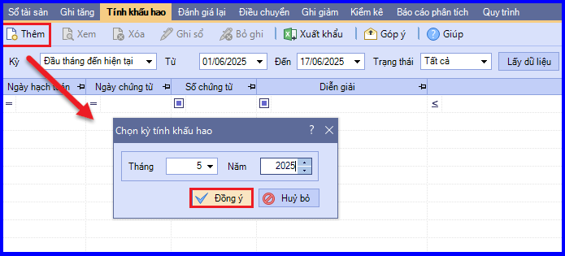
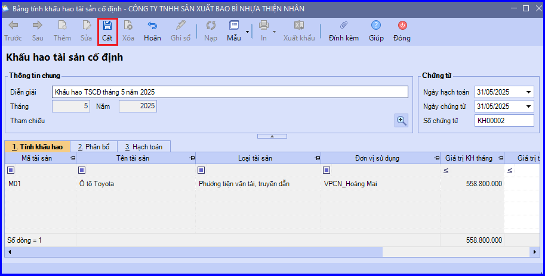
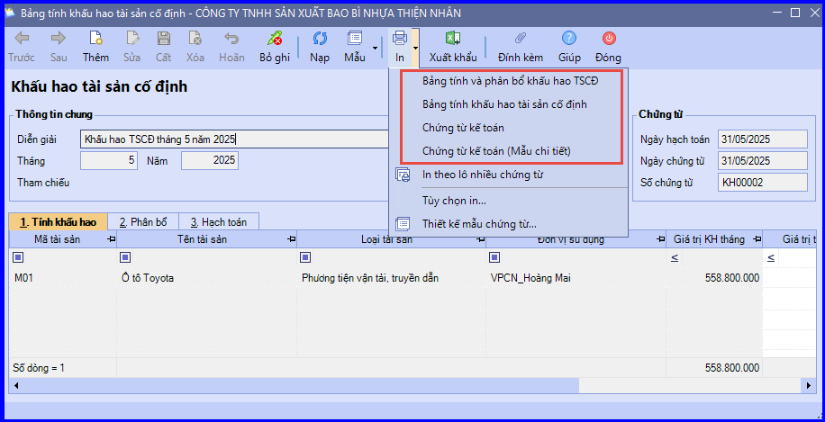

Hướng dẫn cách Khấu hao tài sản cố định trên phần mềm Misa
Khấu hao tài sản cố định: là việc tính toán và phân bổ một cách có hệ thống nguyên giá của tài sản cố định vào chi phí sản xuất, kinh doanh trong thời gian trích khấu hao của tài sản cố định.
Khi phát sinh nghiệp khấu hao Tài Sản Cố Định, thông thường sẽ phát sinh các hoạt động sau:
- Cuối tháng kế toán tính khấu hao của từng tài sản cố định theo 1 trong 3 phương pháp khấu hao:
- Khấu hao theo phương pháp đường thẳng
- Khấu hao theo số dư giảm dần có điều chỉnh
- Khấu hao theo sản lượng
- Kế toán hạch toán nghiệp vụ khấu hao và ghi sổ TSCĐ
- Căn cứ vào chi phí khấu hao TSCĐ đã tính, kế toán tiến hành phân bổ chi phí khấu hao cho các đối tượng chịu chi phí như: Các phòng ban, phân xưởng sản xuất, sản phẩm, công trình, vụ việc, đơn hàng, hợp đồng…
1. Cách định khoản, hạch toán Khấu hao tài sản cố định
- Nợ TK 623 - Chi phí sử dụng máy thi công (TK 6234)
- Nợ TK 627 - Chi phí sản xuất chung (TK 6274)
- Nợ TK 641 - Chi phí bán hàng
- Nợ TK 642 - Chi phí quản lý doanh nghiệp
- Nợ TK 6421, 6422 - Chi phí bán hàng, chi phí quản lý doanh nghiệp (theo Thông tư 133)
- Nợ TK 811 - Chi phí khác
- Có TK 214 - Hao mòn tài sản cố định
2. Các bước hạch toán ghi sổ nghiệp vụ khấu hao TSCĐ trên phần mềm Misa
- Vào phân hệ "Tài sản cố định" => chọn tab "Tính khấu hao" => chọn chức năng "Thêm".

- Nhập tháng, năm tính khấu hao, sau đó ấn "Đồng ý" => Phần mềm sẽ tự động tính ra giá trị tính khấu hao cho các TSCĐ đang được quản lý trên sổ TSCĐ.
- Kiểm tra thông tin chứng từ tính khấu hao, sau đó ấn "Cất".

- Chọn "In" để in mẫu chứng từ, bảng tính khấu hao (tùy nhu cầu)

KẾ TOÁN DIỆU TÂM chúc các bạn làm tốt!
=============================
Nếu bạn muốn thành thạo các kỹ năng làm kế toán trên phần mềm Misa
Thì bạn có thể tham khảo "Khóa Học Thực Hành Kế Toán Trên Phần Mềm Misa" tại Công ty đào tạo Kế Toán Diệu Tâm
Trong khóa học này, bạn sẽ được dạy cách lên sổ sách, lập báo cáo tài chính trên phần mềm Misa
Chi tiết về chương trình đào tạo bạn xem tại đây nhé: Khóa học thực hành kế toán trên Misa
=============================
=============================
Nếu bạn muốn thành thạo các kỹ năng làm kế toán trên phần mềm Misa
Thì bạn có thể tham khảo "Khóa Học Thực Hành Kế Toán Trên Phần Mềm Misa" tại Công ty đào tạo Kế Toán Diệu Tâm
Trong khóa học này, bạn sẽ được dạy cách lên sổ sách, lập báo cáo tài chính trên phần mềm Misa
Chi tiết về chương trình đào tạo bạn xem tại đây nhé: Khóa học thực hành kế toán trên Misa
=============================